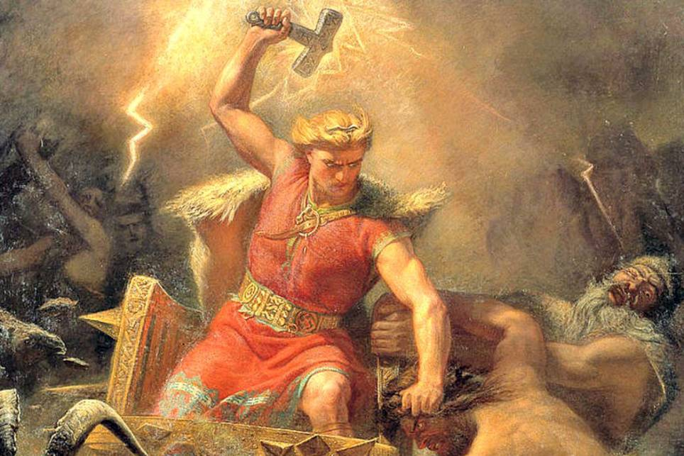
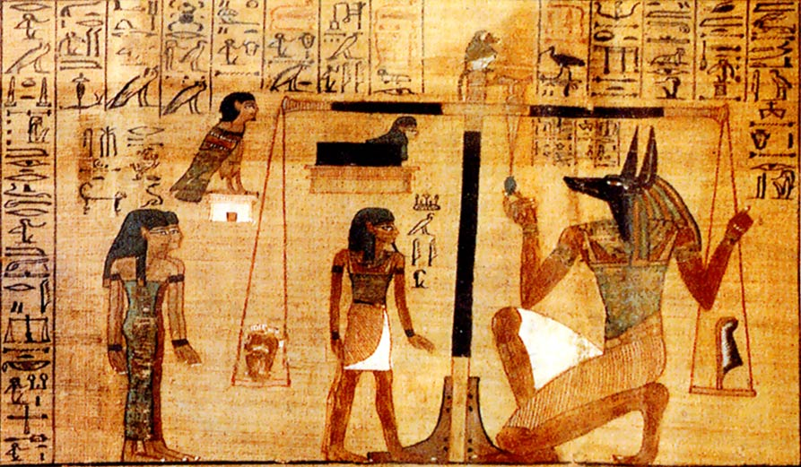
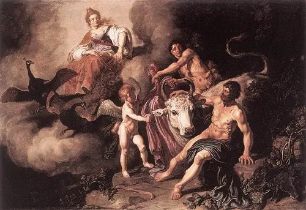
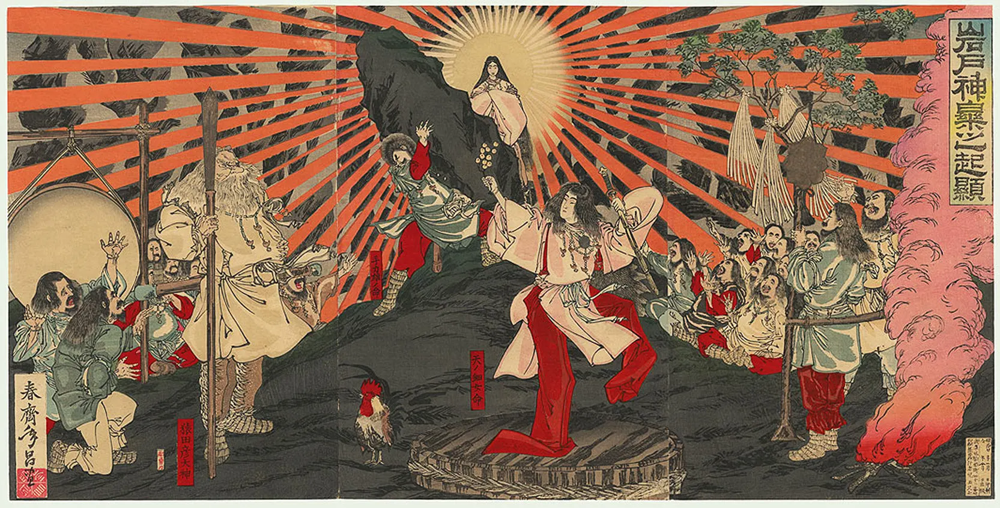

Mitología Griega
Un universo de dioses, héroes y criaturas mitológicas donde el Olimpo es el centro del poder. Zeus, Poseidón, Atenea y otros inmortales protagonizan historias de amor, traición y heroísmo que han perdurado a lo largo de los siglos. Leer mas...

Mitología Nórdica
Forjada en el frío y la batalla, esta mitología narra la historia de dioses guerreros como Odín y Thor, quienes luchan contra fuerzas caóticas hasta el inevitable Ragnarök, el fin del mundo y su renacimiento. Leer mas...
Mitología Egipcia
Los antiguos egipcios creían en muchos dioses y diosas, siendo Osiris el dios de la resurrección y la vida después de la muerte. Isis, su esposa, era la diosa de la magia. Leer mas...
Mitología Romana
Una mitología profundamente ligada a la naturaleza y la guerra, donde dioses como Huitzilopochtli y Quetzalcóatl marcan el destino de los hombres. Su cosmovisión giraba en torno a sacrificios y profecías que daban sentido a su existencia. Leer mas...
Mitología Japonesa
Basada en la espiritualidad del shintoísmo, esta mitología relata el origen del mundo y la relación entre los dioses kami y los humanos. Historias como la de Amaterasu, la diosa del sol, reflejan su visión del equilibrio natural. Leer mas...
